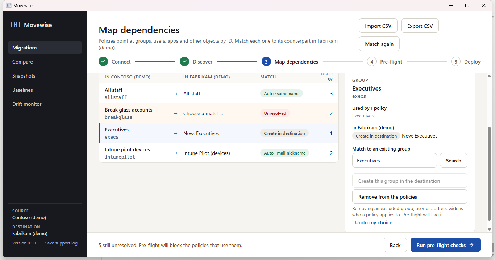

What Movewise migrates in Intune
| Type | Notes |
|---|---|
| Settings catalog policies | With every setting, assignments, filters and scope tags |
| Device configuration profiles | With assignments |
| Compliance policies | Including their noncompliance actions |
| App protection policies | iOS and Android, with their apps |
| Windows Autopilot profiles | The deployment profiles |
| Assignment filters | Created before the policies that use them |
| Scope tags | Custom tags, created before the policies that use them |
How assignments are kept
Intune policies are assigned to groups, often with an assignment filter, and tagged with scope tags. Movewise maps every one of those to the destination tenant before anything is created:
- Groups are matched by name, then by mail nickname, or created empty in the destination.
- Assignment filters and scope tags are matched by name, or created along with the policies.
- Deployment runs in dependency order: scope tags and filters first, then the policies, then their assignments and app protection apps.

Checks before deploying
- Groups, filters or scope tags with no match block the policies that use them.
- Intune licenses in the destination are checked.
- Policies with the same name already in the destination can be skipped, renamed, or updated in place.
- Every policy has a before and after view of exactly what will be created.
What isn't migrated
Device enrolments, Autopilot device hardware hashes, and app packages themselves stay where they are. Movewise moves policy and configuration, not devices or data.